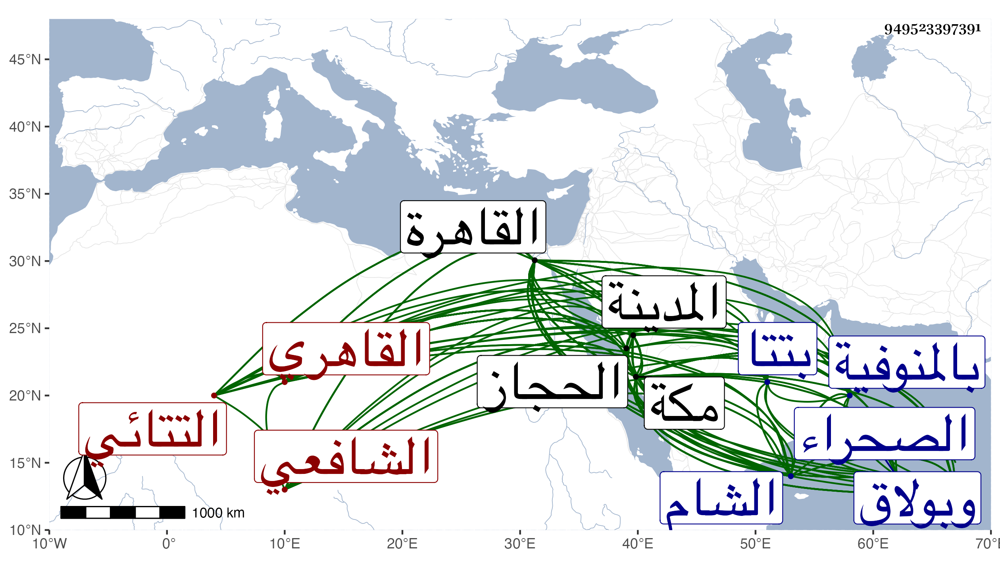

0902Sakhawi.DawLamic.ITO20230111-ara1.EIS1600.949523397391
Biography ID: 949523397391
780
موسى بن علي بن محمد بن سليمان الشرف التتائي القاهري الشافعي أخو إبرهيم وأحمد وأبي بكر ومحمد ويعرف بالأنصاري . ولد في سنة عشرين وثمانمائة بتتا قرية بالمنوفية ونشأ بها فحفظ القرآن ثم قدم القاهرة مع إخوته وأبيهم واشتغل بالعلم مدة بالجامع الأزهر ثم حبب إليه المتجر وسافر فيه إلى الحجاز وغيرها وأول ما داخل الدولة كان هو المتوجه لمكة بالأعلام برضى الظاهر جقمق عن السيد بركات بن حسن وطلبه أو ولده ليقابل وذلك في أواخر سنة تسع وأربعين فكان وصوله لمكة في أوائل التي تليها فبلغه أن السيد في حلى بني يعقوب فتوجه مع النجاب إليه وبلغه الرسالة ورجع معه بولده في البر حتى وصل القاهرة وانتظم الأمر في عود السيد فنبل في عين الملك وعد في الأعيان ، وراج أمره في الدولة وتزايد تردده للسلطان مع كونه على هيئة التجار بحيث صار أبو الخير النحاس في أيام محنته يستعمله فيما يروم إيصاله إليه إلى أن استشعر بعدم نصحه له وأنه ربما يدس ما فيه إغراء للسلطان به فأخذ حذره منه واستوحش كل منهما من الآخر فلما انطمست أيام النحاس كان هو المحاقق له بحيث استقر به السلطان فيما كان معه من الوظائف وهي نظر الجوالي والكسوة والبيمارستان والخانقاه السعيدية وجامع عمرو ووكالة بيت المال وغيرها وقام بالدعوى عليه والحوطة على موجوده وحواصله وظهرت زيادة كفاءته فكان انتهاء ذاك ابتداء الشرف وتردد الناس إليه وعولوا في كثير من مهماتهم عليه ، واستمر في تزايد من الترقي إلى أن تملك الأشرف إينال فتقهقر قليلا سيما وقد صرف عن عدة وظائف بعضها برغبته ولكن مع استمرار صورة وجاهته فلما مات الجمالي ناظر الخاص خطب عوضه لنظر الجيش وقدم على كثير من السعاة فيه فحسنت سيرته حتى سمعت الشرفي بن الجيعان يثني على حذقه في المصطلح فيه وإدراكه لما رتبه معه في الكتابة وأن النجم بن حجي لم يهتد لما اهتدى له ثم صرف عنه بابن الديري مع التعرض لصاحب الترجمة بأخذ مال كثير بدون بهدلة ، ولزم داره إلى أن ألزمه المؤيد بن إينال بمباشرة نظر الجوالي ووكالة بيت المال فباشرهما إلى أن أكرهه الظاهر خشقدم وهو متحير في نفقة المماليك على الاستقرار في نظر الخاص بعد الزين بن الكويز مضافا لهما فقام بالأمر على ما يحبه وسد النفقة بل ذكر بحسن المشي فيها قبل النفقة وبعدها ثم انفصل عنها إلى أن استقر بعد قتل جانبك الجداوي مدبر المملكة إليه المرجع في الولاية والعزل ولم يزل أمره في ازدياد وتزايد تعبه بأخرة جدا بسبب ما كان يفوض إليه في مقدمات التجاريد وغيرها وصار النظر إليه من الملك والدوادار فما وسعه إلا الاستئذان في السفر لمكة فتوجه إليها في موسم سنة ثمانين فحج وفوض إليه شيء من العمائر هناك وبالمدينة، وعزم على الاستيطان بمكة فلم يلبث أن مات في عشاء ليلة الاثنين سابع عشر صفر سنة إحدى وثمانين وصلي عليه من الغد ودفن عند أخويه بتربته من المعلاة وتأسف الناس على فقده رحمه الله وعفا عنه وأرضى عنه أخصامه ، وكان رئيسا شهما عالي الهمة كثير التودد للعلماء والصالحين حسن الإعتقاد فيهم متأدبا معهم زائد التواضع والبذل والحزم والصبر خبيرا بالسياسة والقيام بكل ما يسند إليه أنشأ أماكن بالقاهرة وبولاق والصحراء وغيرها وبلغت عطاياه فيما بلغني مرة للخطيب أبي الفضل خمسمائة دينار ولآخر ألف وكذا كانت له ابنة اسمها مارية من عائشة ابنة الشرف موسى اللقاني عمياء بذل شيئا كثيرا جدا في زوال عماها بحيث طلب منه شخص ألف دينار وسمح له بها ومع ذلك فما أبصرت ، واشتهر اسمه وبعد صيته ، وتغالى في التزويج حتى أنه تزوج ابنة الظاهر ططر خفية ثم فارقها وتزوج زينب ابنة جرباش الكريمي أمير سلاح زوجة الظاهر جقمق ونقم عليهما ذلك من لم يتدبر واستمرت تحته حتى ماتت بدارها قريبا من قنطرة طقزدمر وكذا تزوجه زوجة لنائب الشام أظنه جانم وولدت له ثم تزوج فاطمة ابنة الشرفي يحيى بن الملكي في المحرم سنة خمس وستين وماتت تحته بمكة وتسافل حتى تزوج فرج التي كانت زوجا لعبد الغني صاحب ابن اسنبغا الطياري ولم يحصل له راحة من قبلها بحيث قيل أنها سمته وكانت معه بمكة وظهر له شيء كثير جدا مما كان معه أو تركه وكان ولده الأكبر البدر محمد قد غيب قبل مجيء خبر وفاته لعجزه عن سد ما كان خلف والده في القيام به مما يورد للذخيرة فتحمل السلطان به وأظهر ما اقتضى للولد الطمأنينة بحيث ظهر ثم بعد أيام جاء الخبر فصودر هو وغيره من أقربائه وأتباعه حتى لم يسلم العبد الصالح إبرهيم أخوه . وخلف عشرة أولاد أكبرهم المشار إليه ومارية شقيقته ويحيى وسعد الملوك وأحمد المدني أشقاء وزينب وسعادات شقيقتان من رومية وخديجة من جركسية وأحمد من زوجة نائب الشام ويوسف من جركسية وسيأتي الإشارة لهم بأبسط في الأنصاري من الأنساب وأن ممن صاهره على بناته ممن مات عنهم ابنا أختيه الشمس محمد بن الشيخ يس والشهاب أحمد بن الشمس السنوي وربيبه البدر بن أبي الفرج وأخو زوجته وهو خال الذي قبله إبرهيم ابن بنت الملكي .
